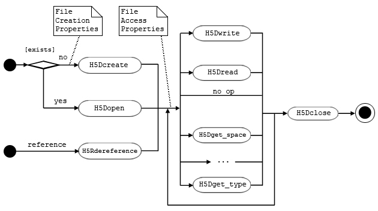
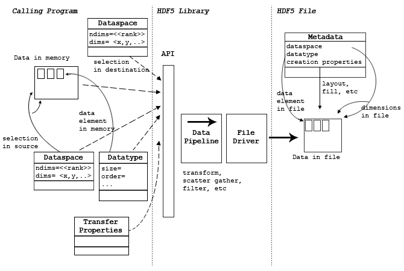
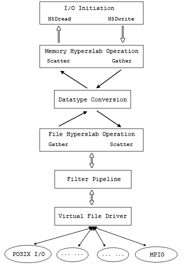
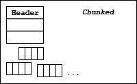
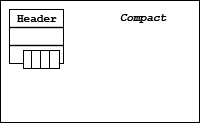
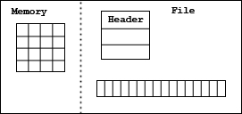
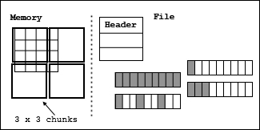
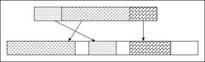
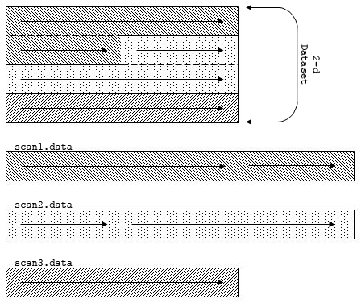

An HDF5 dataset is an object composed of a collection of data elements, or raw data, and metadata that stores a description of the data elements, data layout, and all other information necessary to write, read, and interpret the stored data. From the viewpoint of the application the raw data is stored as a one-dimensional or multi-dimensional array of elements (the raw data), those elements can be any of several numerical or character types, small arrays, or even compound types similar to C structs. The Dataset object may have Attribute objects.
|
|
| Figure 1 |
A Dataset objects is stored in a file in two parts: a header and a data array. The header contains information that is needed to interpret the array portion of the dataset, as well as metadata (or pointers to metadata) that describes or annotates the dataset. Header information includes the name of the object, its dimensionality, its number-type, information about how the data itself is stored on disk (the storage layout), and other information used by the library to speed up access to the dataset or maintain the file's integrity.
The HDF5 dataset interface, comprising the H5D functions, provides a mechanism for managing HDF5 datasets, including the transfer of data between memory and disk and the description of dataset properties.
A Dataset is used by other HDF5 APIs, either by name or by a handle (e.g., returned by H5Dopen).
A Dataset can be added to a Group with the H5Glink call, and deleted from a group with H5Gunlink. The link and unlink operations use the name of an object, which may be a dataset. The dataset does not have to open to be linked or unlinked.
A Dataset may be the target of an object reference. The object reference is create by H5Rcreate, with the name of an object which may be a dataset and the reference type H5R_OBJECT. The Dataset does not have to be open to create a reference to it.
An object reference may also refer to a region (selection) of a Dataset. The reference is created with H5Rcreate and a reference type of H5R_DATASET_REGION.
An object reference can be accessed by a call to H5Rdereference. When the reference is to a Dataset or Dataset region, the H5Rdeference call returns a handle to the Dataset, just as if H5open has been called.
A Dataset may have user defined Attributes, which are created with H5Acreate,
and accessed through the H5A API. To create an attribute for a Dataset, the
Dataset must be open, and the handle is passed to H5Acreate. The attributes of
a Dataset are discovered, and opened using H5Aopen_name, H5Aopen_idx, or H5Aiterate;
which use the handle of the Dataset. An Attribute can be deleted with H5Adelete,
which uses the handle of the Dataset.
|
C Function F90 Function |
Purpose |
H5Dcreate
|
Creates a dataset at the specified location. |
H5Dopen
|
Opens an existing dataset. |
H5Dclose
|
Closes the specified dataset. |
H5Dget_space
|
Returns an identifier for a copy of the dataspace for a dataset. |
H5Dget_space_status
|
Determines whether space has been allocated for a dataset. |
H5Dget_type
|
Returns an identifier for a copy of the datatype for a dataset. |
H5Dget_create_plist
|
Returns an identifier for a copy of the dataset creation property list for a dataset. |
H5Dget_offset
|
Returns dataset address in file. |
H5Dget_storage_size
|
Returns the amount of storage required for a dataset. |
H5Dvlen_get_buf_size
|
Determines the number of bytes required to store VL data. |
H5Dvlen_reclaim
|
Reclaims VL datatype memory buffers. |
H5Dread
|
Reads raw data from a dataset into a buffer. |
H5Dwrite
|
Writes raw data from a buffer to a dataset. |
H5Diterate
|
Iterates over all selected elements in a dataspace. |
H5Dextend
|
Extends a dataset with unlimited dimension. |
H5Dfill
|
Fills dataspace elements with a fill value in a memory buffer. |
This section explains the programming model for a Datasets.
The programming model for using a Dataset has three main phases:
obtain access to the dataset operate on the dataset using the Dataset handle returned above release the dataset. A Dataset may be opened several times, and operations performed with several different handles to the same Dataset. All the operations affect the dataset, although the calling program must synchronize if necessary to serialize accesses.
Note that the Dataset remains open until the last handle is closed. Figure 2 shows the basic sequence of operations.
|  |
| Figure 2 |
Creation and data access operations may have optional parameters which are set with property lists. The general programming model is:
A new dataset is created by a call to H5Dcreate. If successful, the call returns a handle for the newly created Dataset.
Access to an existing Dataset is obtained by a call to H5Dopen. This call returns a handle for the existing Dataset.
An Object Reference may be dereferenced to obtain a handle to the dataset it points to.
In each of these cases, the successful call returns a handle to the dataset. The handle is used in subsequent operations until it is closed.
The Dataset handle can be used to write and read data to the Dataset, to query and set properties, and to perform other operations such as adding attributes, linking in groups, creating references, and so on.
The Dataset handle can be used for any number of operations until it is closed.
When all operations are completed, the Dataset handle should be closed. This releases the dataset.
After the handle is closed, it cannot be used for further operations.
A Dataset is created and initialized with a call to H5Dcreate. The Dataset create operation sets permanent properties of the Dataset:
These properties cannot be changed for the life of the Dataset, although the dataspace may be expanded up to its maximum dimensions.
A Dataset name is a sequence of alphanumeric ASCII characters. The full name would include a tracing of the group hierarchy from the root group of the file, e.g., /rootGroup/groupA/subgroup23/dataset1. The local name or relative name within the lowest-level group containing the dataset would include none of the group hierarchy. e.g., Dataset1.
The Dataspace of a dataset defines the number of dimensions and the size of each dimension. The Dataspace defines the number of dimensions, and the maximum dimension sizes and current size of each dimension. The maximum dimension size can be a fixed value or the constant H5D_UNLIMITED, in which case the actual dimension size can be incremented with calls to H5Dextend, up to the maximum. The maximum dimension size is set when the Dataset is created and cannot be changed.
Raw data has a Datatype, which describes the layout of the raw data stored in the file. The file Datatype is set when the Dataset is created and can never be changed. When data is transferred to and from the Dataset, the HDF5 library will assure that the data is transformed to and from the stored format.
Storage properties of the Dataset are set when it is created. Table 1 shows the categories of storage properties. The storage properties cannot be changed after the Dataset is created. The storage properties are described below.
When a Dataset is created, optional filters are specified. The filters are added to the data transfer pipeline when data is read or written. The standard library includes filters to implement compression, data shuffling, and error detection code. Additional user defined filters may also be used.
The required filters are stored as part of the Dataset, and the list may not be changed after the Dataset is created. The HDF5 library automatically applies the filters whenever data is transferred.
A newly created Dataset has no attributes and no data values. The dimensions, data type (in the file), storage properties, and selected filters are set. Table 1 lists the required inputs, Table 2 lists the optional inputs.
Table 1 |
|
|
Required inputs |
Description |
| Dataspace |
The shape of the array |
| Datatype |
The layout of the stored elements |
| name |
The name of the dataset in the group |
Table 2 |
|
|
Optional Setting |
Description |
| Storage Layout |
How the data is organized in the file, including chunking. |
| Fill value |
The behavior and value for uninitialized data. |
| External Storage (optional) |
Option to store the raw data in an external file. |
| Folders |
Select optional filters to be applied, e.g., compression. |
To create a new dataset
Figure 3 shows example code to create an empty dataset. The Dataspace is 7 X 8, the Datatype is a Big Endian integer. The dataset is created with the name "dset1", it is a member of the root group, "/".
|
| Figure 3 |
Figure 4 shows example code to create a similar Dataset with a fill value of '-1'. This code has the same steps as in Figure 3, but uses a non-default property list. A file creation property list is created, and then the fill value is set to the desired value. Then the property list is passed to the H5Dcreate call.
|
| Figure 4 |
After this code is executed, the dataset has been created and written to the file. The data array is uninitialized. Depending on the storage strategy and fill value options that have been selected, some or all of the space may be allocated in the file, and fill values may be written in the file.
Data is transferred between from memory and the raw data array of the Dataset through H5Dwrite and H5Dread operations. A data transfer has the following basic steps:
Note that the location of the data in the file, the Datatype of the data in the file, the storage properties, and the filters do not need to be specified, because these are stored as a permanent part of the Dataset. A selection of elements from the Dataspace is specified, which may be the whole dataspace.
Figure 5 shows a diagram of a write operation, which transfers a data array from memory to a dataset in the file (usually on disk). A read operation has similar parameters, with the data flowing the other direction.
|  |
| Figure 5 |
The calling program must allocate sufficient memory to store the data elements to be transferred. For a write (from memory to the file), the memory must be initialized with the data to be written to the file. For a read, the memory must be large enough to store the elements that will be read. The amount of storage needed can be computed from the memory Datatype (which defines the size of each Data element) and the number of elements in the selection.
The memory layout of a single data element is specified by the Memory Datatype. This specifies the size, alignment, and byte order of the element, as well as the Datatype Class. Note that the memory data type must be the same Datatype Class as the file, but may have different byte order and other properties. The HDF5 library automatically transforms data elements between the source and destination layouts. See the chapter "HDF5 Datatypes" for more details.
For a write, the memory Datatype defines the layout of the data to be written, e.g., IEEE floating point numbers in native byte order. If the file Datatype (defined when the Dataset is created) is different but compatible, the HDF5 library will transform each data element when it is written. For example, if the file byte order is different than the native byte order, the HDF5 library will swap the bytes.
For a read, the memory Datatype defines the desired layout of the data to be read. This must be compatible with the file Datatype, but should generally use native formats, e.g., byte orders. The HDF5 library will transform each data element as it is read.
The data transfer will transfer some or all of the elements of the Dataset, depending on the Dataspace selection. The selection is two Dataspace objects (one for the source, and one for the destination) which describe which elements of the Dataspace to be transferred, which may be all of the data, or just some elements (partial I/O). Partial I/O is defined by defining hyperslabs or lists of elements in a Dataspace object.
The Dataspace selection for the source defines the indices of the elements to be read, the Dataspace selection for the destination defines the indices of the elements to be written. The two selections must define the same number of points, but the order and layout may be different. The HDF5 library automatically selects and distributes the elements, according to the selections, e.g., to perform a scatter-gather or sub-set of the data.
For some data transfers, additional parameters should be set using the transfer property list. Table 2 lists the categories of transfer properties. These properties set parameters for the HDF5 library, and may be used to pass parameters for optional filters and file drivers. For example, transfer properties are used to select independent or collective operation when using MPI-I/O.
Table 3 |
|
|
Properties |
Description |
| Library parameters |
Internal caches, buffers, B-Trees, etc. |
| Memory management |
Variable length memory management, data overwrite |
| File driver management |
Parameters for file drivers |
| Filter management |
Parameters for filters |
The data transfer is done by calling H5Dread or H5Dwrite with the parameters described above. The HDF5 library constructs the required pipe-line, which will scatter-gather, transform data types, apply the requested filters, and use the correct file driver.
During the data transfer, the transformations and filters are applied to each element of the data, in the required order, until all the data is transferred.
To perform a data transfer, it is necessary to allocate and initialize memory, describe the source and destination, set required and optional transfer properties, and call the H5D API.
The basic procedure to write to a dataset
Figure 6 shows example code to write a 4 X 6 array of integers. In the example, the data is initialized in the memory array dset_data. The dataset has already been created in the file, so it is opened with H5Dopen.
The Data is written with H5Dwrite. The arguments are the dataset handle, the memory datatype (H5T_NATIVE_INT), the memory and file selections (H5S_ALL in this case: the whole array), and the default (empty) property list. The last argument is the data to be transferred.
|
| Figure 6 |
Figure 7 shows a similar write, setting a non-default value for the transfer buffer. The code is the same as Figure 6, but a transfer property list is created and the desired buffer size is set. The H5Dwrite has the same arguments, but uses the property list to set the buffer.
|
| Figure 7 |
To read from a dataset
Figure 8 shows example code that reads a 4 X 6 array of integers from a dataset called "dset1". First, the dataset is opened. The H5Dread call has parameters:
|
| Figure 8 |
The Dataset can be queried to discover its properties (Table 4). The Dataspace and Datatype, and Dataset creation properties can be retrieved. These calls return a handle to an object.
The total size of the data can be retrieved. This is the amount of stored data for the raw data or for variable length data. This is the amount of memory that must be allocated to read the whole array.
|
Query Function |
Description |
| H5Dget_space |
Retrieve the file dataspace |
| H5Dget_type |
Retrieve the file datatype |
| H5Dget_create_plist |
Retrieve the creation properties |
| H5Dget_storage_size |
Retrieve the total bytes for all the data of the dataset |
| H5Dvlen_get_buf_size |
Retrieve the total bytes for all the variable length data of the dataset |
|
The Dataset is used for other miscellaneous operations.
Table 4 |
|
|
Operation |
Description |
| H5Dextend |
See below |
| H5Diterate |
|
| H5Dvlen_reclaim |
See below |
The HDF5 library implements data transfers through a pipeline which implements data transformations (according to the Datatype and selections), chunking (as requested), and I/O operations using different mechanisms (file drivers). The pipeline is automatically configured by the HDF5 library. Metadata is stored in the file so that the correct pipeline can be constructed to retrieve the data. In addition, optional filters, such as compression, may be added to the standard pipeline.
Figure 9 illustrates data layouts for different layers of an application using HDF5. The application data is organized as a multidimensional array of elements. The HDF5 format specification defines the stored layout of the data and metadata. The storage layout properties define the organization of the abstract data. This data is written and read to and from some storage medium.

|
| Figure 9 |
The last stage of a write (and first stage of a read) is managed by an HDF5 File Driver module. The Virtual File Layer of the HDF5 library implements a standard interface to alternative I/O methods, including memory (AKA "core") files, single serial file I/O, multiple file I/O, and parallel I/O. The File Driver maps a simple abstract HDF5 file to the specific access methods.
The raw data of an HDF5 Dataset is conceived to be a multi-dimensional array of data elements. This array may be stored in the file according to several storage strategies:
The storage strategy does not affect data access methods, except that certain operations may be more or less efficient depending on the storage strategy and the access patterns.
Overall, the data transfer operations (H5Dread and H5Dwrite) work identically for any storage method, for any file driver, and for any filters and transformations. The HDF5 library automatically manages the data transfer process. In some cases, transfer properties should or must be used to pass additional parameters, such as MPI/IO directives when used the parallel file driver.
When data is written or read to or from and HDF5 file, the HDF5 library passes the data through a sequence of processing steps, the HDF5 data pipeline. This data pipeline performs operations on the data in memory, including byte swapping, alignment, scatter-gather, and hyperslab selections. The HDF5 library automatically determines which operations are needed and manages the organization of memory operations, such as extracting selected elements from a data block. The data pipeline modules operate on data buffers, each processes the buffer and passes the transformed buffer to the next stage.
Table 5 lists the stages of the data pipeline Figure 10 shows the order of processing during a read or write.
Table 5 |
|
|
Layers |
Description |
| I/O initiation |
Initiation of HDF5 I/O activities in user's application program, i.e. H5Dwrite and H5Dread. |
| Memory hyperslab operation |
Data is scattered to (for read), or gathered from (for write) application's memory buffer (bypassed if no datatype conversion is needed). |
| Datatype conversion |
Datatype is converted if it is different between memory and storage (bypassed if no datatype conversion is needed). |
| File hyperslab operation |
Data is gathered from (for read), or scattered to (for write) to file space in memory (bypassed if no datatype conversion is needed). |
| Filter pipeline |
Data is processed by filters when it passes. Data can be modified and restored here (bypassed if no datatype conversion is needed, no filter is enabled, or dataset is not chunked). |
| Virtual File Layer |
Facilitate easy plug-in file drivers, like MPIO, POSIX I/O. |
| Actual I/O |
Actual file driver used by the library, like MPIO or STDIO. |
|  |
| Figure 10 |
The HDF5 Library automatically applies the stages as needed.
When the memory Dataspace selection is other than the whole Dataspace, the Memory Hyperslab stage scatters/gathers the data elements between the appliation memory (described by the selection) and contiguous memory buffer for the pipeline. On a write, this is a gather operation, on a read, this is a scatter operation.
When the Memory Datatype is different from the File Datatype, the Datatype Conversion stage transforms each data element. For example, if data is written from 32-bit Big Endian memory, and the File Datatype is 32-bit Little Endian, the Datatype Conversion stage will swap the bytes of every elements. Similarly, when data is read from the file to native memory, byte swapping will be applied automatically when needed.
The File Hyperslab stage is similar to the Memory Hyperslab stage, but is managing the arrangement of the elements according to the File Dataspace selection. When data is read, data elements are gathered from the data blocks from the file to fill the contiguous buffers, which are processed by the pipeline. When data is read, the elements from a buffer are scattered to the data blocks of the file.
In addition to the standard pipeline, optional stages, called filters, can be inserted in the pipeline. The standard distribution includes optional filters to implement compression and error checking. User applications may add custom filters as well.
The HDF5 Library distribution includes or employs several optional filters, as listed in Table 6. The filters are applied in the pipeline between the Virtual File Layer and the File Hyperslab Operation (Figure 10). The application can use any number of filters, in any order.
Table 6 |
|
|
Filters |
Description |
| gzip compression |
Data compression using
|
| Szip compression |
Data compression using the Szip library. |
| Shuffling |
To improve compression performance, data is regrouped by its byte position in the data unit. I.e. 1st, 2nd, 3rd, 4th bytes of integers are stored together respectively. |
| Fletcher32 |
Fletcher32 checksum for error-detection. |
Filters may be used only for chunked data and are applied to chunks of data between the file hyperslab stage and the virtual file layer. At this stage in the pipeline, the data is organized as fixed-size blocks of elements, and the filter stage processes each chunk separately.
Filters are selected by dataset creation properties, and some behavior may
be controlled by data transfer properties. The library determines what
filters must be applied and applies them in the order in which they were
set by the application. That is, if an application calls
H5Pset_shuffle then H5Pset_deflate when creating
a dataset’s creation property list, the library will apply the
shuffle filter first then the deflate filter.
See The HDF Group website for further information regarding the Szip filter.
I/O is performed by the HDF5 Virtual File layer. The File Driver interface writes and reads blocks of data, each driver module implements the interface using different I/O mechanisms. Table 7 lists the File Drivers currently supported. Note that the I/O mechanisms are separated from the pipeline processing: the pipeline and filter operations are identical no matter what data access mechanism is used.
Table 7 |
|
|
File Driver |
Description |
| H5FD_CORE |
Store in memory (optional backing store to disk file) |
| H5FD_DPSS |
|
| H5FD_FAMILY |
Store in a set of files |
| H5FD_LOG |
Store in logging file. |
| H5FD_MPIO |
Store using MPI/IO |
| H5FD_MULTI |
Store in multiple files, several options to control layout. |
| H5FD_SEC2 |
Serial I/O to file using Unix "section 2" functions. |
| H5FD_STDIO |
Serial I/O to file using Unix "stdio" functions |
| H5FD_STREAM |
I/O to socket. |
Each File Driver writes/reads contiguous blocks of bytes from a logically contiguous address space. The File Driver is responsible for managing the details of the different physical storage methods.
In general, everything above the Virtual File Layer works identically no matter what storage method is used. However, some combinations of storage strategies and file drivers are not allowed. Also, some options may have substantially different performance depending on the file driver that is used. In particular, multi-file and parallel I/O may perform considerably differently from serial drivers, depending on chunking and other settings.
Data Transfer properties set optional parameters that control parts of the data pipeline. Table 8 lists three transfer properties that control the behavior of the library.
Table 8 |
|
|
Property |
Description |
| H5Pset_buffer |
Maximum size for the type conversion buffer and background buffer and optionally supplies pointers to application-allocated buffers |
| H5Pset_hyper_cache |
Whether to cache hyperslab blocks during I/O. |
| H5Pset_btree_ratios |
Set the B-tree split ratios for a dataset transfer property list. The split ratios determine what percent of children go in the first node when a node splits. |
Some filters and File Drivers require or use additional parameters from the application program. These can be passed in the transfer property list. Table 9 lists the four File Driver property lists.
Table 9 |
|
|
Property |
Description |
| H5Pset_dxpl_mpio |
Control the MPI I/O transfer mode (independent or collective) during data I/O operations. |
| H5Pset_dxpl_multi |
|
| H5Pset_small_data_block_size |
Reserves blocks of size bytes for the contiguous storage of the raw data portion of small datasets. The HDF5 library then writes the raw data from small datasets to this reserved space, thus reducing unnecessary discontinuities within blocks of meta data and improving IO performance. |
| H5Pset_edc_check |
Disable/enable EDC checking for read. (When selected, EDC is always written) |
The Transfer Properties are set in a property list, which is passed as a parameter of the H5Dread or H5Dwrite call. The transfer properties are passed to each pipeline stage, which may use or ignore any property in the list. In short, there is one property list, which contains all the properties.
The raw data is conceptually a multi-dimensional array of elements, stored as a contiguous array of bytes. The data may be physically stored in the file in several ways. Table 6 lists the storage strategies for a dataset.
Table 10 |
|
|
Storage Strategy |
Description |
| CONTIGUOUS |
The dataset is stored as one continuous array of bytes |
| CHUNKED |
The dataset is stored as fixed sized chunks. |
| COMPACT |
A small dataset is stored in the metadata header. |
The different storage strategies do not affect the data transfer operations of the dataset: reads and writes work the same for any storage strategy.
These strategies are described in the following sections.
A contiguous dataset is stored in the file as a header and a single continuous array of bytes. (Figure 12) The data elements are arranged in row major order, with according to the datatype. By default, data is stored contiguously.
| Figure 12 |
Contiguous storage is the simplest model. It has several limitations. First, the dataset must be a fixed size: it is not possible to extend the limit of dataset, or to have unlimited dimensions. Second, because data is passed through the pipeline as fixed sized blocks, compression and other filters cannot be used with contiguous data.
The data of a dataset may be stored as fixed sized chunks (Figure 13). A chunk is a hyper-rectangle of any shape (less than or equal to the rank of the dataset). When a dataset is chunked, each chunk is read or written as a single I/O operation, and passed from stage to stage of the pipeline and filters.
|  |
| Figure 13 |
Chunks may be any size and shape that fits in the Dataspace of the dataset. For example, a three dimensional Dataspace can be chunked as 3-D cubes, 2-D planes, or 1-D lines. The chunks may extend beyond the size of the Dataspace, for example a 3 X 3 dataset might by chunked in 2 X 2 chunks. Sufficient chunks will be allocated to store the array, any extra space will not be accessible. So, to store the 3X3 array, four 2X2 chunks would be allocated, with 5 unused elements stored.
Chunked datasets can be unlimited (in any direction), and can be compressed or filtered.
Since the data is read or written by chunks, chunking can have a dramatic effect on performance by optimizing what is read and written. Note, too, that for specific access patterns (e.g., parallel I./O) decomposition into chunks can have a large impact on performance.
For Contiguous and Chunked storage, the Dataset header information and data are stored in two (or more) blocks (Figure 14). Therefore, at least two I/O operations are required to access the data, one to access the header, and one (or more) to access data. For a small dataset, this is considerable overhead.
|  |
| Figure 14 |
A small dataset may be stored in a continuous array of bytes in the header block, using the COMPACT storage option. This dataset can be read entirely in one operation, which retrieves the header and data. The dataset must fit in the header, which varies depending on what metadata may be stored. In general, a compact dataset should be approximately 30 KB or less total size.
Data transfers can write or read some of the data elements of the dataset. This is controlled by specifying two selections, one for the source and one for the destination. Selections are specified by creating a Dataspace with selections.
Selections may be a union of hyperslabs, where a hyperslab is a contiguous hyper-rectangle from the Dataspace. A second form of selection is a list of points. Selected fields of compound data type may be read or written. In this case, the selection is controlled by the memory and file Datatypes.
Summary of Procedure:
For a detailed explanation of selections, see the chapter "HDF5 Dataspaces and Partial I/O."
When a dataset is created, space is allocated in the file for its header and initial data. The amount of space allocated when the dataset is created depends on the storage properties. When the Dataset is modified (data is written, attributes added, or other changes), additional storage may be allocated if necessary.
Table 11 |
|
|
Object |
Size (bytes) |
| Header |
Variable, but typically around 256 bytes at the creation of a simple dataset with a simple datatype |
| Data |
Size of the data array (number of elements X size of element). Space allocated in the file depends on storage strategy and allocation strategy. |
A dataset header consists of one or more header messages containing persistent metadata describing various aspects of the dataset. These records are defined in the HDF5 File Format Specification. The amount of storage required for the metadata depends on the metadata to be stored. Table 12 summarizes the metadata.
Table 12 |
|
|
Header Information |
Approximate Storage Size |
| Datatype (required) |
bytes or more, depends on type |
| Dataspace (required) |
bytes or more, depends on number of dimensions and hsize_t |
|
Layout (required) - points to the stored data |
bytes or more, depends on hsize_t and number of dimensions |
| Filters |
Depends on the number of filters, size of filter message depends on name and data that will be passed. |
The header blocks also store the name and values of attributes, so the total storage depends on the number and size of the attributes.
In addition, the data set must have at least one link, including a name, which is stored in the file and in the Group it is a linked from.
The different storage strategies determine when and how much space is allocated for the data array. See the discussion of fill values below for a detailed explanation of the storage allocation.
For a continuous storage option, the data is stored in a single, contiguous block in the file. The data is nominally a fixed size, (number of elements X size of element). Figure 15 shows and example of a two dimensional array, stored as a contiguous dataset.
Depending on the fill value properties, the space may be allocated when the dataset is created or when first written (default), and filled with fill values if specified. For parallel I/O, by default the space is allocated when the dataset if created.
|  |
| Figure 15 |
For chunked storage, the data is stored in one or more chunks. Each chunk is a continuous block in the file, but chunks are not necessarily stored contiguously. Each chunk has the same size. The data array has the same nominal size as a contiguous array (number of elements X size of element), but the storage is allocated in chunks, so the total size in the file can be larger that the nominal size of the array.
|  |
| Figure 16 |
If a fill value is defined, each chunk will be filled with the fill value. Chunks must be allocated when data is written, but they may be allocated when the file is created, as the file expands, or when data is written.
For serial I/O, by default chunks are allocated incrementally, as data is written to the chunk. For a sparse dataset, chunks are allocated only for the parts of the dataset that are written. In this case, if the dataset is extended, no storage is allocated.
For parallel I/O, by default the chunks are allocate when the dataset is created or extended., with fill values written to the chunk.
In either case, the default can be changed using fill value properties. For example, using serial I/O, the properties can select to can allocate chunks when the dataset is created
H5Dextend is used to change the current dimensions of the Dataset, within the limits of the Dataspace. Each dimension can be extended up to its maximum, or unlimited. Extending the Dataspace may or may not allocate space in the file, and may or may not write fill values, if they are defined. See the next section for an explanation.
|
| Figure 17 |
The HDF5 Library implements several strategies for when storage is allocated if and when it is filled with fill values for elements not yet written by the user. Different strategies are recommended for different storage layouts and file drivers. In particular, a parallel program needs storage allocated during a collective call (e.g., create or extend), while serial programs may benefit from delaying the allocation until the data is written.
Two File Creation properties control "when to allocate space", "when to write the fill-value" and the actual fill-value to write.
Table 13 shows the three options for when data is allocated in the file. "Early" allocation is done during dataset create call. Certain File Drivers (especially MPI-I/O and MPI-posix) require space to be allocated when a dataset is created, so all processors will have the correct view of the data.
Table 13 |
|
|
Strategy |
Description |
| Early |
Allocate storage for the dataset immediately when the dataset is created. |
| Late |
Defer allocating space for storing the dataset until the dataset is written. |
| Incremental |
Defer allocating space for storing each chunk until the chunk is written. |
| Default |
Use the strategy (Early, Late, Incremental) for the storage method and access method. (Recommended) |
"Late" allocation is done at the time of the first write to dataset. Space for the whole Dataset is allocated at the first write.
"Incremental" allocation (chunks only) is done at the time of the first write to the chunk. Chunks that have never been written are not allocated in the file. In a sparsely populated Dataset, this option allocates chunks only where data is actually written.
The "Default" property selects the option recommended as appropriate for the storage method and access method. The defaults are shown in Table 14. Note that "Early" allocation is recommended for all Parallel I/O, while other options are recommended as the default for serial I/O cases.
Table 14 |
||
|
|
Serial I/O |
Parallel I/O |
| Contiguous Storage |
Late |
Early |
| Chunked Storage |
Incremental |
Early |
| Compact Storage |
Early |
Early |
The second property is when to write fill value, "Never" and "Allocation". Table 15 shows these options.
Table 15 |
|
|
When |
Description |
| Never |
Fill value will never be written. |
| Allocation |
Fill value is written when space is allocated. (Default for chunked and contiguous data storage.) |
The third property is the fill value to write. Table 16 shows the values. By default, the data is filled with zeroes. The application may choose no fill value (Undefined), in which case uninitialized data may have any random values. The application may define a fill-value of the appropriate type. See the chapter "HDF5 Datatypes" for more information regarding fill values.
|
What to Write |
Description |
| Undefined |
No value stored, do not fill with zeroes (the default) |
| Default |
By default, the library defines a fill-value of all zero bytes |
| User-defined |
The applications specifies the fill value. |
Together these three properties control the library's behavior. Table 16 summarizes the possible behavior of during the dataset create-write-close cycle.
Table 16 |
|||
|
When to allocate space |
When to write fill value |
What fill value to write |
Library create-write-close behavior |
| Early |
Never |
- |
Library allocates space when dataset is created, but never writes fill value to dataset. (Read of unwritten data returns undefined values.) |
| Late |
Never |
- |
Library allocates space when dataset is written to, but never writes fill value to dataset. (Read of unwritten data returns undefined values.) |
| Incremental |
Never |
- |
Library allocates space when dataset or chunk (whichever is smallest unit of space) is written to, but never writes fill value to dataset or chunk. (Read of unwritten data returns undefined values.) |
| - |
Allocation |
undefined |
Error on creating dataset, dataset not created. |
| Early |
Allocation |
default or user-defined |
Allocate space for dataset when dataset is created. Write fill value (default or user-defined) to entire dataset when dataset is created. |
| Late |
Allocation |
default or user-defined |
Allocate space for dataset when application first writes data values to the dataset. Write fill value to entire dataset before writing application data value. |
| Incremental |
Allocation |
default or user-defined |
Allocate space for dataset when application first writes data values to the dataset or chunk (whichever is smallest unit of space). Write fill value to entire dataset or chunk before writing user's data value. |
During the H5Dread function call, the library behavior depends on whether space has been allocated, whether fill value has been written to storage, how fill value is defined, and when to write fill value. Table 17 summarizes the different behaviors.
Table 17 |
|||
|
Is space allocated in the file? |
What is the fill value? |
When to write fill value? |
Library read behavior |
| No |
undefined |
<<any>> |
Error. Cannot create this dataset. |
|
|
default or user-defined |
<<any>> |
Fill memory buffer with the fill value. |
| Yes |
undefined |
<<any>> |
Return data from storage (dataset), trash is possible if user has not written data to portion of dataset being read. |
|
|
default or user-defined |
Never |
Return data from storage (dataset), trash is possible if user has not written data to portion of dataset being read. |
|
|
default or user-defined |
Allocation |
Return data from storage (dataset). |
There are two cases to consider, depending on whether the space in the file has been allocated before the read or not. When space has not yet been allocated, if a fill value is defined the memory buffer will be filled with the values and returned (no read from disk).
If the space has been allocated, the values are returned from the stored data. The unwritten elements will be filled according to the fill value, or undefined.
The size of the dataset cannot be reduced after it is created. The dataset can be expanded by extending one or more dimensions, with H5Dextend. It is not possible to contract a Dataspace, or to reclaim allocated space.
HDF5 does not at this time provide a mechanism to remove a Dataset from a file, or to reclaim the storage from deleted objects. Through the H5Gunlink function one can remove links to a dataset from the file structure. Once all links to a dataset have been removed, that dataset becomes inaccessible to any application and is effectively removed from the file. But this does not recover the space the dataset occupies.
The only way to recover the space is to write all the objects of the file into a new file. Any unlinked object is inaccessible to the application and will not be included in the new file.
See the chapter "HDF5 Groups" for further discussion of HDF5 file structures and the use of links.
The system resources required for HDF5 objects, including Datasets, Datatypes, and Dataspaces, should be released once access to the object is no longer needed. This is accomplished via the appropriate close function. This is not particular to datasets but a general requirement when working with the HDF5 library; failure to close objects will result in resource leaks.
In the case where a Dataset is created or data has been transferred, there are several objects that must be closed, including the Dataset, the Datatype, Dataspace, and property lists.
The application program must free any memory variables and buffers it allocates. When accessing data from the file, the amount of memory required can be determined by determining the size of the memory Datatype and the number of elements in the memory selection.
Variable length data are organized in two or more areas of memory (see "HDF5 Datatypes"). When writing data, the application creates an array of vl_info_t, which contains pointers to the elements, e.g., strings. In the file, the Variable Length data is stored in two parts: a heap with the variable length values of the data elements, and an array vlinfo_t elements. When the data is read, the amount of memory required for the heap can be determined with the H5Dget_vlen_buf_size call.
The a Data Transfer property may be used to set a custom memory manager for allocating variable length data for a H5Dread. This is set with the H5Pset_vlen_mem_manager call.
To free the memory for Variable Length data, it is necessary to visit each element, free the variable length data, and reset the element. The application must free the memory it has allocated. For memory allocated by the HDF5 Library during a read, the H5Dvlen_reclaim function can be used to perform this operation.
The External storage format allows data to be stored across a set of non-HDF5 files. A set segments (offsets and sizes) in one or more files is defined as an external file list, or EFL, and the contiguous logical addresses of the data storage are mapped onto these segments. Currently, only the H5D_CONTIGUOUS storage format allows external storage. External storage is enabled by a Dataset Creation Property. Table 18 shows the API.
Table 18 |
|
|
Function |
Description |
|
herr_t H5Pset_external (hid_t plist, const char *name, off_t offset, hsize_t size) |
This function adds a new segment to the end of the external file list of the specified dataset creation property list. The segment begins a byte offset of file name and continues for size bytes. The space represented by this segment is adjacent to the space already represented by the external file list. The last segment in a file list may have the size H5F_UNLIMITED, in which case the external file may be of unlimited size and no more files can be added to the external files list. |
| int H5Pget_external_count (hid_t plist) |
Calling this function returns the number of segments in an external file list. If the dataset creation property list has no external data then zero is returned. |
|
herr_t H5Pget_external (hid_t plist, unsigned idx, size_t name_size, char *name, off_t *offset, hsize_t *size) |
This is the counterpart for the H5Pset_external() function. Given a dataset creation property list and a zero-based index into that list, the file name, byte offset, and segment size are returned through non-null arguments. At most name_size characters are copied into the name argument which is not null terminated if the file name is longer than the supplied name buffer (this is similar to strncpy()). |
Figure 19 shows an example of how a contiguous, one-dimensional dataset is partitioned into three parts and each of those parts is stored in a segment of an external file. The top rectangle represents the logical address space of the dataset while the bottom rectangle represents an external file.
|  |
| Figure 19 |
Figure 19a shows code that defines the external storage for the example. Note that the segments are defined in order of the logical addresses they represent, not their order within the external file. It would also have been possible to put the segments in separate files. Care should be taken when setting up segments in a single file since the library doesn't automatically check for segments that overlap.
|
| Figure 19a |
Figure 20 shows an example of how a contiguous, two-dimensional dataset is partitioned into three parts and each of those parts is stored in a separate external file. The top rectangle represents the logical address space of the dataset while the bottom rectangles represent external files.
|  |
| Figure 20 |
Figure 21 shows code for this example.
In this example, the library maps the multi-dimensional array onto a linear address space as defined by the HDF5 Format Specification, and then maps that address space into the segments defined in the external file list.
|
| Figure 21 |
The segments of an external file can exist beyond the end of the (external) file. The library reads that part of a segment as zeros. When writing to a segment that exists beyond the end of a file, the external file is automatically extended. Using this feature, one can create a segment (or set of segments) which is larger than the current size of the dataset, which allows to dataset to be extended at a future time (provided the data space also allows the extension).
All referenced external data files must exist before performing raw data I/O on the dataset. This is normally not a problem since those files are being managed directly by the application, or indirectly through some other library. However, if the file is transferred from its original context, care must be taken to assure that all the external files are accessible in the new location.